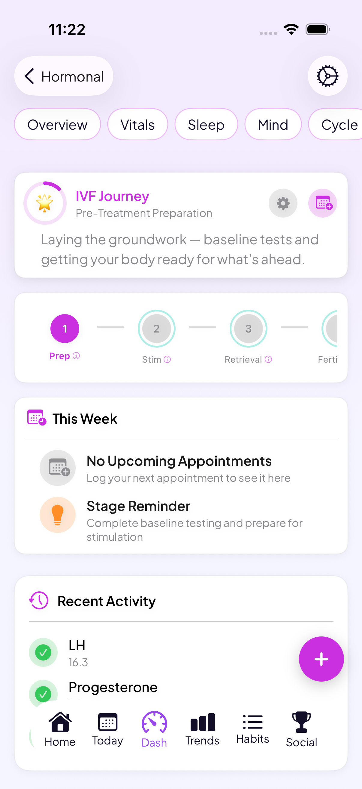

An IVF tracker built into a whole-health app
IVF means keeping track of medications, appointments, and protocols on a schedule that doesn't leave much room for error, then getting through the two-week wait. Go Go Gaia keeps your treatment stage, medications, and hormone labs next to your mood, sleep, and nutrition, so it doesn't all have to live in a separate app or a stack of sticky notes.
Download Go Go GaiaNot on iPhone? Use the web app in any browser.

Built for IVF tracking
Stage-by-stage treatment flow
An 8-stage flow follows your cycle from pre-treatment through ovarian stimulation, egg retrieval, fertilization and embryo culture, embryo transfer, the two-week wait, pregnancy test, and post-test.
Medication tracking
Log gonadotropins, trigger shots, progesterone support, and GnRH agonists or antagonists, with reminders so timing doesn't get lost in a busy week of injections.
Follicle, embryo & hormone tracking
Log follicle counts and embryo quality updates, and see hormone trends across your stimulation cycle, including estradiol, progesterone, and AMH.
Two-week wait support
Daily check-ins with supportive messages for the stretch between transfer and testing, one of the harder parts of a cycle to sit through.
Appointments, labs & doctor-ready export
Track monitoring appointments and lab values as you go, then export an organized record to bring to your care team.
Tracks across multiple cycles
Treatment history carries across IVF, IUI, and FET cycles, so if you go through more than one round, your data and patterns aren't starting over each time.
Freezing eggs instead of transferring?
The stimulation phase, medication tracking, and symptom logging overlap closely with IVF, minus the embryo transfer and two-week wait. See our egg freezing app comparison for how the same tracking applies to a freezing cycle.
See how it all connects
IVF affects more than your reproductive system. Medications and hormone shifts can change your sleep, mood, and energy day to day. Go Go Gaia keeps your treatment tracking next to nutrition, mood, sleep, and wearable data, with Apple Watch, Oura Ring, and Garmin syncing automatically, and looks for patterns across it, like how a rough night's sleep tends to line up with a harder day. Lab results and hormone panels sit in the same timeline as everything else, ready to export for your care team. If a cycle leads to pregnancy, that history carries straight into pregnancy tracking instead of starting over.
What you can log
Private by default
IVF tracking means logging sensitive details: treatment stage, medications, hormone labs, and pregnancy test results. Your data is encrypted and stored securely, and Go Go Gaia doesn't run ads or sell your data to third parties. You can export or delete what you've logged at any time.
Frequently asked questions
Still comparing options? See our IVF app comparison.
Keep IVF tracking in one place, from prep to testing
Log today's dose, this week's appointment, or last night's sleep, whichever part of treatment you're in.
Download Go Go GaiaNot on iPhone? Use the web app in any browser.
Tracking for other conditions
PCOS tracking · Endometriosis tracking · Perimenopause tracking · Cycle syncing · All conditions